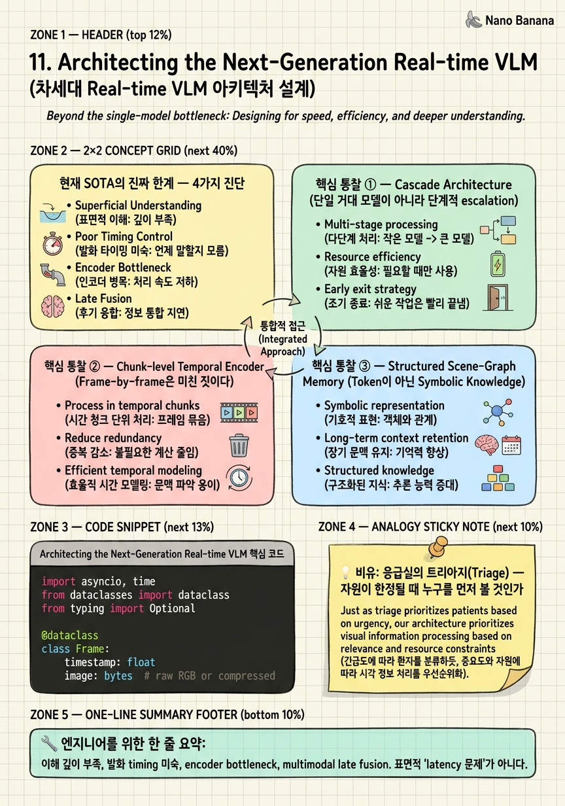

Architecting the Next-Generation Real-time VLM

🎯 학습 목표
- 현재 production real-time VLM(Gemini Live, GPT-4o Realtime, Flash-VStream, VideoLLM-online)의 진짜 한계 4가지를 진단할 수 있다
- Cascade architecture가 왜 단일 거대 모델보다 우월한지, 그리고 stage별 latency budget을 어떻게 설정하는지 설명할 수 있다
- Frame-level encoder 대신 chunk-level temporal encoder(V-JEPA-2 계열)를 쓸 때의 정량적 이점을 계산할 수 있다
- Token-based memory vs structured scene-graph memory의 trade-off를 분석하고, 어떤 case에서 graph가 우월한지 판단할 수 있다
- 'Timing of Speech' 문제가 왜 가장 어려운 미해결 문제인지 이해하고, RL-from-user-feedback으로 학습 가능한 'speak_now classifier' 디자인을 제안할 수 있다
지금까지 10개 챕터를 통해 우리는 Real-time Video LLM의 멘탈 모델이 'sampler 잘 짜기 → memory system 설계 → streaming pipeline + adaptive processing'으로 진화해왔다는 것을 보았다. 그리고 각 단계의 핵심 메커니즘을 깊이 들여다보았다.
그런데 한 발 물러서서 보면, 2026년 6월 기준 모든 production system은 여전히 어딘가 어색하다. Gemini Live는 빠르지만 깊은 이해가 없고, GPT-4o Realtime은 자연스럽지만 30분 전 일을 못 기억한다. Flash-VStream은 elegant하지만 production에서는 안 쓴다. 무엇이 빠져 있는가?
이 챕터에서는 내가 처음부터 만든다면 어떤 시스템을 만들 것인가를 함께 고민한다. 단순히 좋은 idea를 나열하는 것이 아니라, 현재 한계의 근본 원인을 진단하고, 그것을 풀기 위한 architectural decision들을 깊이 따져본다. 이 챕터를 마치면 당신은 다음 세대 real-time VLM을 설계할 수 있는 시야를 갖게 될 것이다. 시니어 인터뷰에서 '이 분야를 어떻게 발전시키겠는가?'라는 질문이 나왔을 때, 이 챕터의 사고 framework가 그대로 적용된다.
핵심 내용
현재 SOTA의 진짜 한계 — 4가지 진단
1. Latency는 좋아졌는데 '이해'는 깊지 않다.
Gemini Live, GPT-4o Realtime을 써보면 streaming token은 충분히 빠르다. 200-500ms 안에 응답이 시작된다. 그런데 정작 '방금 뭐 본 거야?'라고 물으면 표면적인 답을 한다. '사람이 컵을 들었네요'까지는 가는데, '그 컵이 왜 거기 있었지? 처음에는 다른 자리에 있지 않았어?' 같은 질문에 무너진다.
이유: Memory가 token-level에 머물러 있다. Flash-VStream의 STAR 4-tier도 결국 token cluster이고, 그래서 'high-level concept을 인덱싱'할 능력이 없다. 30분 전 일을 기억하려면 그동안의 token을 전부 KV cache에 들고 있어야 하는데, 그러면 latency가 무너진다.
2. 언제 말해야 할지 모른다.
Reactive하게는 잘 답한다. 사용자가 물으면 답한다. 그런데 proactive interjection이 자연스럽지 않다. '방금 그거 보셨어요?' '저거 이상한데요?' 같은 자발적 발화를 못 한다. 사람과의 가장 큰 차이가 여기서 나온다.
현재 시스템들은 '항상 침묵하다가 호출되면 말한다' 방식이거나 '계속 말한다' 방식이다. 둘 다 어색하다. 언제 입을 열 것인가는 별개의 학습 문제인데, 아직 아무도 잘 풀지 못했다.
3. Encoder가 진짜 병목이다.
LLM 추론 측은 vLLM, SGLang, TensorRT-LLM으로 충분히 빨라졌다. 1ms 단위로 KV cache 관리하고, continuous batching으로 throughput 짜낸다. 그런데 그 앞단의 CLIP/SigLIP encoder가 frame당 5-15ms 먹는다. 30fps로 돌리면 150-450ms/sec, 사실상 한 GPU를 encoder가 점유한다.
이게 종종 과소평가된다. 사람들은 'LLM이 비싸'라고 생각하지만, real-time에서는 vision encoder가 LLM보다 비싼 경우가 흔하다. 특히 streaming에서는.
4. Multimodal이 후처리(bolted-on)다.
Audio는 Whisper로 ASR 따로 돌리고, video는 CLIP으로 따로 돌리고, 그 결과를 LLM 앞에 concat해서 넣는다. 이건 late fusion이고, 진짜 multimodal이 아니다.
사람이 영화를 볼 때 'audio'와 'video'를 따로 처리하지 않는다. 입 모양과 음성이 자연스럽게 합쳐져서 인식된다. 그런데 현재 시스템은 lip-sync mismatch에도 둔감하고, audio cue가 video understanding을 enhance하는 일도 없다.
이 4가지를 짚지 못하면, 다음 세대 시스템 설계가 표면적인 개선에 머문다.
핵심 통찰 ① — Cascade Architecture (단일 거대 모델이 아니라 단계적 escalation)
지금까지의 시스템들은 하나의 거대한 모델로 모든 걸 처리하려 했다. CLIP → Q-Former → LLM 단방향 pipeline. 모든 frame이 모든 stage를 통과한다.
그런데 인간의 시각도 그렇지 않다. 시각 자극은 superior colliculus에서 빠르게(20-50ms) reflex 반응을 일으키고, visual cortex에서 인식(100-200ms), frontal lobe에서 판단(300ms+)이 일어난다. 모든 자극이 frontal lobe까지 가지 않는다. 길에서 갑자기 뭔가 움직이면 머리로 생각하기 전에 몸이 먼저 움찔한다 — superior colliculus가 직접 작동한 거다.
같은 원리를 시스템에 적용하면:
Stage 1 (1ms budget): Patch motion + Audio VAD
← DNN 없이 신호 처리만. 어떤 패치가 움직였나, 사람 목소리가 들리나?
Stage 2 (50ms budget): Tiny vision encoder (5M params, e.g. MobileViT)
← 'Is this interesting?' 만 빠르게 판단
← Spatial saliency map으로 ROI 도출
Stage 3 (200ms budget): Heavy temporal encoder (V-JEPA-2)
← Stage 2가 'interesting'이라고 판단한 chunk만 처리
← 32 frames → 16 tokens로 압축
Stage 4 (continuous): Structured memory update
← Scene graph(object, event, causal link) 갱신
Stage 5 (on query/trigger): LLM reasoning + generation
← Speculative two-tier (Nano draft + Pro verify)
핵심은 stage별 latency budget이 명시적으로 분리되어 있다는 것이다. Stage 1은 무조건 1ms 안에 끝나야 한다. 그 안에 끝나지 못하면 frame을 drop한다. Stage 1이 'no signal'이라고 하면 Stage 2를 건너뛴다. 모든 frame이 모든 stage를 통과하지 않는다.
이게 Mobileye가 자율주행에서 쓰는 cascade detector의 철학이고, 사실 모든 hard real-time system의 표준 패턴이다. 그런데 video LLM 분야는 아직 이걸 적극적으로 도입하지 않고 있다. 다들 '한 모델로 다 처리'를 추구하고 있다.
언제 cascade가 옳은가? Trade-off:
- ✅ 유리: 대부분의 frame이 'uninteresting' (감시 카메라, 회의 녹화)
- ✅ 유리: Latency가 critical (telepresence, AR glasses)
- ❌ 불리: 모든 frame이 정보적 (스포츠 하이라이트 분석)
- ❌ 불리: Stage 2 가 'no'라고 했는데 사실 'yes'였던 경우(false negative) 의 cost가 큰 경우
Real-time conversational VLM은 명백히 cascade가 유리하다. 사용자와 대화하는 90%의 시간 동안 '특별한 사건'은 일어나지 않는다.
핵심 통찰 ② — Chunk-level Temporal Encoder (Frame-by-frame은 미친 짓이다)
현재 거의 모든 video LLM은 매 frame마다 CLIP/SigLIP encoder를 호출한다. 30fps 비디오면 초당 30번 encoder forward. 각 frame은 768-dim token 256개를 생성한다. 그러면 초당 7,680개의 token이 쏟아진다.
그런데 잠깐, 인접 frame들은 얼마나 다른가? 33ms 간격의 두 frame은 거의 동일하다. 정보적으로 redundant한 token을 매번 만들어내고 있는 거다.
V-JEPA-2 (Meta, 2024-2025) 같은 chunk encoder의 발상:
프레임 하나하나 인코딩하지 말고, 1초 분량(32 frames)을 한 번에 인코딩해서 16개 token으로 압축. 즉:
- 기존: 30 frames × 256 tokens = 7,680 tokens/sec
- Chunk encoder: 16 tokens/sec (480배 압축)
그리고 놀라운 점 — 정확도가 더 높다. 왜냐하면 chunk encoder는 학습 과정에서 자연스럽게 temporal context를 학습하기 때문이다. Frame-by-frame encoder는 'frame 5와 frame 6 사이에 무슨 일이 일어났는지'를 모른다. Chunk encoder는 안다.
더 깊은 이점 — Self-supervised pretraining:
V-JEPA-2는 unlabeled video로 사전학습된다. 학습 신호: '이 비디오의 미래 chunk를 latent space에서 예측하라'. 이게 가능한 이유는 자연스러운 비디오가 풍부한 self-supervision signal을 갖고 있기 때문이다.
결과: labeled video 없이도 강력한 temporal representation을 얻는다. CLIP은 image-text pair가 필요하지만, V-JEPA는 raw video만 있으면 된다. 데이터 수집 비용이 훨씬 낮다.
2026년 6월 시점의 현실:
아직 production에서 V-JEPA-2를 도입한 상용 real-time VLM은 거의 없다. Gemini, GPT-4o도 CLIP/SigLIP variant에 기반한다. 이건 legacy decision이지, 옳은 결정이 아니다. 6-12개월 안에 V-JEPA-2 계열이 표준이 될 거라고 본다.
그러면 자연스럽게 Stage 3 (heavy encoder)의 latency budget이 200ms → 50ms로 떨어진다. 시스템 전체의 latency가 한 단계 내려간다. 이게 architecture-level의 진짜 개선이다.
핵심 통찰 ③ — Structured Scene-Graph Memory (Token이 아닌 Symbolic Knowledge)
Flash-VStream의 STAR memory도 결국 token cluster다. 'spatial token', 'temporal token', 'abstract token' — 이름만 다르지 다 동일한 token space의 vector들이다. 그래서 'concept-level indexing'을 못 한다.
예를 들어 사용자가 '30분 전에 그 사람이 들고 있던 컵, 빨간색이었나?'라고 물으면, token-based memory는 30분치 전체 token을 다시 attention해야 한다. 이건 latency 측면에서 사실상 불가능하다.
대안: Object-centric, Event-centric Memory를 graph로
memory = {
'objects': [
{'id': 'person_1', 'type': 'human', 'pos': (x, y),
'attrs': {'shirt_color': 'blue', 'glasses': True},
'first_seen': 0.5, 'last_seen': 1830.2},
{'id': 'cup_1', 'type': 'object', 'pos': (x', y'),
'attrs': {'color': 'red', 'material': 'ceramic'},
'first_seen': 12.3, 'last_seen': 1850.1}
],
'events': [
{'id': 'e_1', 'what': 'pickup',
'actor': 'person_1', 'target': 'cup_1',
'when': 1820.5, 'confidence': 0.92},
{'id': 'e_2', 'what': 'drink',
'actor': 'person_1', 'target': 'cup_1',
'when': 1823.1, 'confidence': 0.88}
],
'causal_links': [
(e_1, e_2, 'caused_by'), # pickup이 drink를 가능하게 함
]
}
이렇게 하면 '빨간 컵?' 질문에 대해 graph lookup 한 번이면 끝난다. O(log N) 시간에 해결. Token-based attention의 O(N) (N = 30분치 token 수)에 비해 압도적이다.
더 중요한 이점 — Memory가 token budget을 안 잡아먹는다.
LLM의 context window는 한정적이다. Token-based memory를 쓰면 30분치 video token이 context를 다 잡아먹어서 actual reasoning에 쓸 토큰이 남지 않는다. Graph는 외부에 있고, query 시점에만 관련 부분만 LLM에게 전달한다.
'30분 전 빨간 컵' 질문이 오면: graph에서 cup_1 찾기 → 'color: red' 확인 → LLM에게 'Yes, the red cup at 1820s' 같은 textual fact만 전달.
Trade-off의 솔직한 인정:
Scene graph 추출 자체가 unreliable하다. 'person_1이 cup_1을 들었나?' 같은 event detection은 video understanding의 hard problem이다. Graph가 garbage in → garbage out 한다.
그래서 hybrid가 답이다: graph (structured, queryable, lossy) + token cache (raw, expensive, accurate). 자주 쓰는 query는 graph로, 깊은 추론이 필요하면 token cache의 관련 부분을 token-by-token attention.
이 방향은 2024 NeurIPS의 'Memory-augmented LLMs' 계열이 시작했지만, 아직 video에 적용한 사례가 없다. 누군가 첫 적용자가 되면 큰 차별점이 된다.
가장 어려운 미해결 문제 — 'Timing of Speech'
지금까지 본 architecture decisions는 다 풀 수 있다. Cascade는 엔지니어링, chunk encoder는 V-JEPA-2 활용, scene graph는 적극적 R&D 투자. 시간과 자원 문제다.
그런데 언제 입을 열 것인가는 진짜 어렵다.
사람과 자연스러운 대화의 timing은:
- 사용자가 뭔가를 보고 멈춘 순간 (gaze cue)
- 이상한 일이 일어난 순간 (event detection)
- 사용자가 망설이는 순간 (audio prosody — '음...')
- 한참 침묵이 흐른 후 (context signal)
- 사용자가 말을 끝마친 직후 vs 중간에 (interruption boundary)
이걸 trigger로 inference를 시작해야 하는데, false positive cost가 매우 크다. 잘못 말 걸면 짜증나고, 못 알아채면 멍청해 보인다. 그리고 사람마다 선호하는 timing이 다르다.
제안: 별도의 'speak_now?' classifier
Main LLM과 독립적인 작은 model. 매 200ms마다 binary decision: 'speak now?' Input은:
- 최근 5초의 video feature (Stage 2 output)
- 최근 5초의 audio feature (prosody, VAD)
- 사용자의 gaze direction (eye tracking 있다면)
- 마지막 발화 이후 경과 시간
- 최근 사용자 발화의 sentence boundary 정보
- Scene graph의 새로운 event 발생 여부
Output: speak / wait / interrupt 3-class.
학습은 어떻게?
Reinforcement learning from user feedback. 사용자가:
- 발화를 무시하면 → negative reward
- 발화에 응답하면 → positive reward
- 'shut up' 같은 명시적 negative → strong negative
- 사용자가 결국 자기가 묻게 되면 → '우리가 먼저 말했어야 했는데' negative
이건 사실상 personalized policy learning이다. Bob은 자주 말해주는 걸 좋아하고, Alice는 조용한 걸 선호한다. Per-user LoRA + RL fine-tuning으로 학습.
가장 큰 챌린지:
Reward sparsity. 사용자는 매번 명시적 feedback을 주지 않는다. Implicit signal(응답 여부, 응답 latency, 후속 행동)에서 reward를 추출해야 한다. 이건 RLHF에서도 어려운 부분이다.
왜 이걸 푸는 게 중요한가:
이 한 가지 문제가 풀리면, real-time VLM이 '질문에 답하는 도구'에서 '함께 보는 동반자'로 격이 달라진다. Latency나 accuracy의 marginal gain보다 훨씬 큰 가치를 만든다.
2026년 6월 현재, 이 방향으로 진지하게 R&D 하는 곳은 거의 없다. 모두가 '더 빠른 응답', '더 긴 context'에 매달려 있다. 진짜 차세대 시스템을 만들고 싶다면 여기에 집중해야 한다.
💡 비유로 이해하기
응급실에 환자가 동시에 10명 도착한다. 의사 한 명, 침대 3개. 모든 환자를 똑같이 상세하게 진료할 수 없다. 그래서 응급실은 트리아지 nurse를 둔다. 환자가 도착하면 1분 안에 활력 징후만 빠르게 체크 — 호흡, 맥박, 의식. 그걸로 4-tier 분류한다: emergent(즉시), urgent(10분 내), less urgent(1시간 내), non-urgent.
트리아지 nurse는 diagnosis를 안 한다. 그냥 'how urgent?'만 본다. 1분의 budget으로 가능한 게 그것뿐이다. 'emergent' 분류된 환자만 즉시 의사에게 가서 30분짜리 정밀 진료를 받는다. 'non-urgent'는 대기실에서 기다린다.
이게 바로 cascade architecture의 원형이다. Stage 1 (트리아지 nurse, 1분)이 Stage 2 (의사, 30분)에게 escalate할지 결정한다. 모든 환자가 의사를 만나지 않는다. 만약 모든 환자가 의사 30분 진료를 받겠다고 우기면, 응급실은 마비된다.
흥미로운 점: 트리아지 nurse가 가끔 잘못 판단해서 emergent인데 less urgent로 보낼 수 있다. 이게 false negative다. 그래서 트리아지 nurse는 '의심스러우면 한 단계 위로 분류'하는 보수적 정책을 쓴다. 우리 cascade VLM도 마찬가지다 — Stage 2의 'is this interesting?' classifier는 조금 더 보수적으로 (false positive를 감수하고) 설정한다. 잘못 통과시킨 frame이 Stage 3에서 빠르게 걸러진다.
Real-time VLM의 진짜 enlightenment는 이거다: '모든 frame을 똑같이 처리하지 마라. 누구를 먼저 볼지 결정하는 것이 첫 번째 일이다.'
💻 코드 예시
Cascade architecture의 skeleton을 보여주는 코드다. 각 stage는 명시적 latency budget을 가지고, budget을 초과하면 frame을 drop하거나 escalation을 포기한다. 진짜 production system은 이것보다 훨씬 복잡하지만, 'stage별 budget + escalation policy'라는 핵심 패턴은 그대로다.
import asyncio, time
from dataclasses import dataclass
from typing import Optional
@dataclass
class Frame:
timestamp: float
image: bytes # raw RGB or compressed
audio_chunk: bytes
# ─── Stage 1: 1ms budget — DNN 없이 신호 처리 ───
async def stage1_signal_check(frame: Frame) -> dict:
"""Patch motion + Audio VAD. Pure signal processing."""
start = time.perf_counter()
motion_score = compute_patch_motion(frame.image) # frame-diff
voice_active = audio_vad(frame.audio_chunk) # WebRTC VAD
elapsed_ms = (time.perf_counter() - start) * 1000
return {
'interesting': motion_score > 0.1 or voice_active,
'motion': motion_score, 'voice': voice_active,
'budget_ok': elapsed_ms < 1.0,
}
# ─── Stage 2: 50ms budget — Tiny encoder ───
async def stage2_tiny_encoder(frame: Frame) -> dict:
"""MobileViT (5M params). 'Is this interesting?' classifier."""
start = time.perf_counter()
features = await tiny_encoder.forward(frame.image) # ~30ms on edge GPU
interest_score = saliency_head(features)
roi = extract_roi(features)
elapsed_ms = (time.perf_counter() - start) * 1000
return {
'escalate': interest_score > 0.5,
'roi': roi,
'budget_ok': elapsed_ms < 50.0,
}
# ─── Stage 3: 200ms budget — Heavy chunk encoder ───
async def stage3_chunk_encoder(chunk_frames: list) -> Optional[dict]:
"""V-JEPA-2: 32 frames → 16 tokens. Only on escalated chunks."""
if len(chunk_frames) < 16: return None # not enough context
tokens = await vjepa2.encode_chunk(chunk_frames) # ~150ms
scene_delta = extract_scene_changes(tokens) # symbolic delta
return {'tokens': tokens, 'scene_delta': scene_delta}
# ─── Orchestrator: stage별 escalation ───
async def cascade_pipeline(frame_stream):
chunk_buffer = []
async for frame in frame_stream:
s1 = await stage1_signal_check(frame)
if not s1['interesting']:
continue # drop frame, no escalation
s2 = await stage2_tiny_encoder(frame)
if not s2['escalate']:
continue # tiny encoder said 'boring'
chunk_buffer.append(frame)
if len(chunk_buffer) >= 32: # 1 second of frames
s3 = await stage3_chunk_encoder(chunk_buffer)
chunk_buffer = []
if s3:
await update_scene_graph(s3['scene_delta']) # Stage 4 (continuous)
if scene_change_significant(s3):
await trigger_proactive_response(s3) # Stage 5 (on trigger)Stage 1은 DNN 없이 frame-diff와 audio VAD만 쓴다. CPU에서 1ms 안에 끝난다. 'no motion, no voice'면 frame을 그냥 버린다. 90% 정도의 frame이 여기서 걸러진다.
Stage 2는 작은 vision encoder(MobileViT 5M params)로 'interesting?' 분류. 30-50ms. 'boring'이면 escalation 안 함.
Stage 3은 escalation된 frame들을 32-frame chunk로 모아서 V-JEPA-2로 한 번에 처리. Chunk encoder의 장점이 여기서 나온다 — frame-by-frame이 아니라 1초를 한 번에 처리하니 inference cost가 줄어든다.
Stage 4 (update_scene_graph)와 Stage 5 (trigger_proactive_response)는 별도 챕터의 주제다. 핵심은 모든 frame이 Stage 5까지 가지 않는다는 점이다. Stage별 budget이 명시적이고, escalation이 conditional이라는 것이 진짜 production-grade cascade의 본질이다.
🏭 현업에서의 평가
✅ 시니어가 보는 것
- 현재 SOTA의 한계를 표면적이 아니라 **근본 원인 레벨**에서 진단할 수 있는가 (예: '느려'가 아니라 'encoder가 frame-level이라 redundant compute가 일어난다')
- Architectural decision의 **trade-off를 quantitative하게** 따질 수 있는가 (cascade가 어떤 경우 유리하고 어떤 경우 불리한지 명시할 수 있는가)
- 기존 패러다임의 **legacy decision과 옳은 결정**을 구분할 수 있는가 (예: CLIP은 legacy, V-JEPA가 right choice인 이유를 학습 신호 차원에서 설명)
- **미해결 문제를 식별하고 학습 framework까지 제안**할 수 있는가 (timing of speech에 대해 단순히 'hard'라고 하지 않고 RL with implicit feedback이라는 학습 framework를 제시)
- **'무엇을 만들지'와 '왜 만들지'를 분리**해서 사고할 수 있는가 (technical capability vs user-facing value의 구분)
⚠️ 레드 플래그
- 단순히 '더 큰 모델, 더 빠른 GPU'로 모든 문제를 푸려는 태도 (architectural insight 부재)
- Production system의 한계를 단순히 'engineering issue'로 치부하고 R&D 방향과 분리하는 사고
- 'Timing of speech' 같은 user-experience 문제를 'product team 책임'으로 떠넘기는 자세 (좋은 staff engineer는 system-level과 UX-level을 잇는다)
- 기존 시스템(Gemini Live, GPT-4o Realtime)을 무비판적으로 따라하려는 태도 — 어떤 부분이 legacy이고 어떤 부분이 옳은지 구분 못 함
🎤 예상 인터뷰 질문
- 현재 production real-time VLM의 한 가지 큰 한계를 골라서, 그것의 근본 원인을 진단하고 해결책을 제안하시오. 'latency' 같은 표면적 답은 받지 않습니다.
- Frame-level encoder와 chunk-level encoder의 trade-off를 정량적으로 비교하시오. Throughput, accuracy, training data requirement, deployment cost 차원에서.
- '언제 발화할지' 결정하는 classifier를 학습한다고 가정하자. Reward signal을 어떻게 설계하겠는가? Implicit signal에서 reward를 추출하는 방법을 구체적으로 제시하시오.
✨ 핵심 요약
현재 SOTA의 4가지 진짜 한계
이해 깊이 부족, 발화 timing 미숙, encoder bottleneck, multimodal late fusion. 표면적 'latency 문제'가 아니다.
Cascade Architecture가 옳다
단일 거대 모델이 아니라 1ms → 50ms → 200ms로 stage별 budget을 두고 escalation. 인간 시각 시스템(superior colliculus → visual cortex → frontal lobe)의 구조와 일치.
Chunk Encoder는 frame Encoder를 대체한다
V-JEPA-2 계열로 32 frames → 16 tokens (480배 압축). 정확도도 더 높음 (temporal context 자연 학습).
Memory는 token이 아니라 graph로
Object-centric + event-centric scene graph. O(log N) lookup, token budget 소비 없음. Token cache는 보조.
Speculative + Idle Prediction
On-device Nano로 draft, server Pro로 verify. 사용자가 물을 질문을 미리 예측해서 generation. Perceived latency를 actual latency보다 작게.
Timing of Speech가 가장 어렵다
별도 'speak_now?' classifier + per-user LoRA + RL with implicit feedback. 풀리면 'tool'에서 'companion'으로 격이 바뀐다.
Legacy vs Right Choice를 구분하라
Gemini, GPT-4o가 CLIP을 쓴다고 그게 옳은 결정이 아니다. V-JEPA-2가 더 옳다. 시스템을 분해하고 비판적으로 보는 시야.
분야 전체를 보는 시야가 차세대를 만든다
Marginal improvement(더 빠른 응답, 더 긴 context)에 매달리지 않고, system-level architectural insight + UX-level user value를 잇는 사고가 진짜 도약을 만든다.